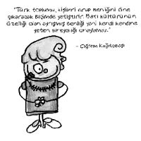

Çiğdem Kağıtçıbaşı (1940-)
Sosyal psikolojinin kurucularından. Sosyo-kültürel psikoloji uzmanı ve uluslararası psikoloji dünyasının önemli isimlerindendir. Çalışmaları, aile, ana-babalık, erken çocukluk dönemi ve kültürel bağlamda insan gelişimi üzerine kuramsal ve uygulamalı araştırmaları kapsamaktadır. Araştırmalarında, insan gelişimi ve aile arasındaki etkileşimi kültürlerarası bir bakış açısıyla incelemiştir. Geliştirdiği kültürlerarası benlik ve aile modeli ile psikolojide ABD egemenliğine karşı çıkmıştır. Türkiye Bilimler Akademisi’nin kurucu üyesidir. Anne Çocuk Eğitim Vakfı’nda pek çok çağdaş uygulamanın başlatıcısıdır. 2000 yılına kadar Dünya Psikoloji Derneği yardımcı başkanlığını yapmıştır. Uzun yıllar UNICEF danışmanlığı da yapmıştır.
1998 yılında çok önemli iki uluslararası ödül almıştır. Bunlardan biri Uluslararası Uygulamalı Psikoloji Kuruluşu’nun verdiği “Psikoloji Biliminin Uluslararası Gelişimine Üstün Katkı Ödülü”, öteki Kültürlerarası Psikoloji Kuruluşu’nun verdiği “Onur Üyeliği” statüsüdür.
İki yüze yakın makalesi yirmi sekiz tane kitabı vardır.
Ne demiş Kağıtçıbaşı…
• Küçük yaştan beri ahlakın örtünmek olduğu öğretisiyle büyüyen kızların üniversiteye geldiklerinde birden bire başlarını açmalarını beklemek gerçekçi değil. Çünkü çıplak gibi hissediyorlar kendilerini ve çok haklı olarak da rahatsız oluyorlar bundan. O yüzden bu noktada doğru soru, “Niye başlarını açmıyorlar?” olmamalı, “Niye başları kapalı?” olmalı…
